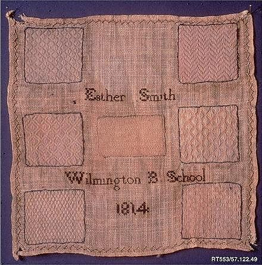
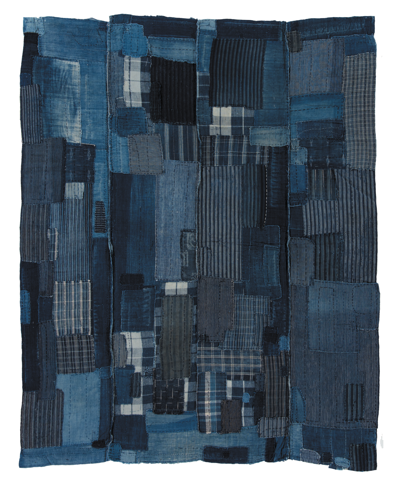
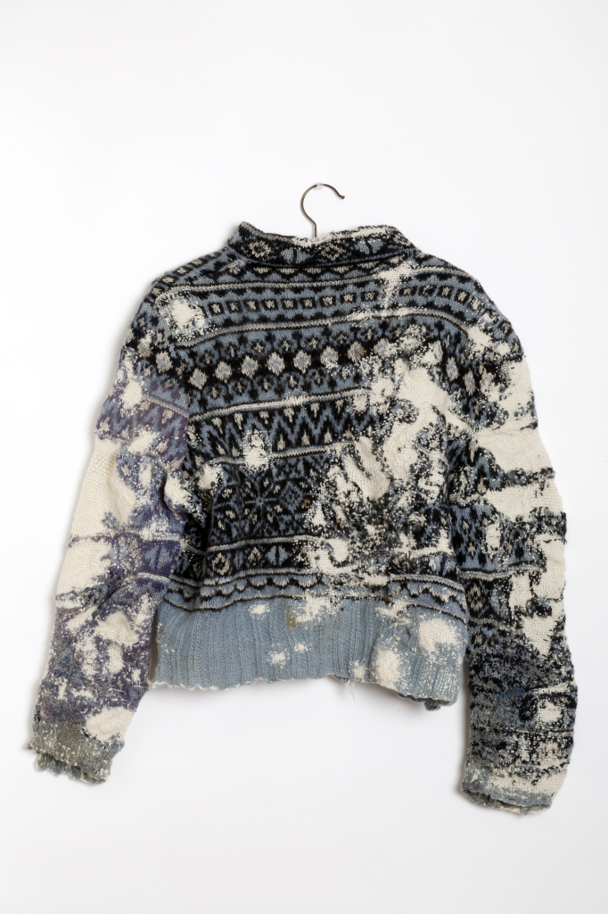
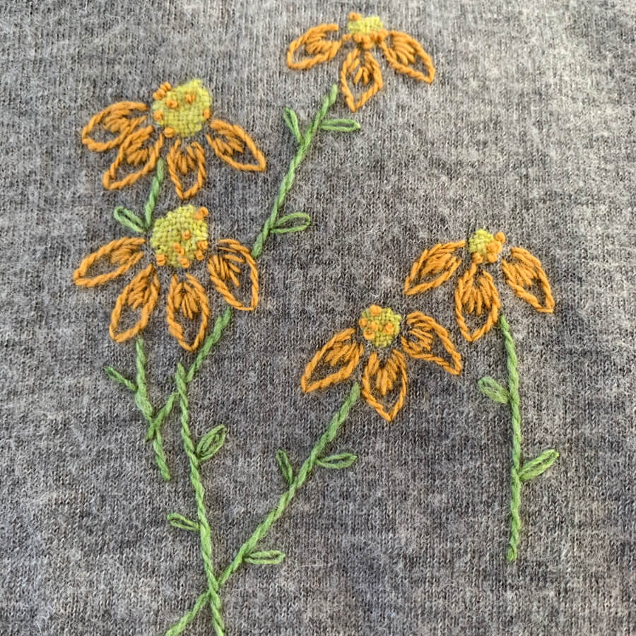

1814 Learning to repair
Patterned practice.
Discreet repairs.
Esther Smith’s sampler displays the skill behind repairs intended to blend into cloth. Textile care was part of girls’ education.
Visibility and value in textile repair
A stitch can conceal damage, express care or begin a new chapter.
Follow the thread through selected moments in repair.

1814 Learning to repair
Esther Smith’s sampler displays the skill behind repairs intended to blend into cloth. Textile care was part of girls’ education.

Before WWII Repeated care
In rural Japan, scraps and running stitches extended the lives of textiles. Repeated repair built the layered surfaces admired today.
A historical context, not an origin date or a date assigned to this pictured object.

2010 Repair as art
Celia Pym’s Norwegian Sweater uses white wool darning to repair damaged cloth. The contrast draws attention to the act of mending.

2019 Repair as service
Flora Collingwood-Norris launches a bespoke visible mending service. Repairs become individual design projects that give worn knitwear another life.
2030–2050
2030
Compatible thread and clear instructions arrive with the garment.
2040
Accessible seams and replaceable sections anticipate future wear.
2050
Layers of repair become a personal record of ownership and care.
Collingwood-Norris, F. (n.d.). [Photograph of visible mending on a cashmere top combining darning and embroidered flowers]. Collingwood-Norris. https://www.collingwoodnorrisdesign.com/knitwearblog/ask-me-a-question-mending
International Quilt Museum. (n.d.). [Photograph of a boro textile]. https://www.internationalquiltmuseum.org/exhibition/boro-hidden-and-visible-japanese-mended-textiles
Pym, C. (2010). Norwegian sweater [Sweater with white wool darning]. https://celiapym.com/work/norwegian-sweater/
Smith, E. (1814). Darning sampler [Cotton, wool, and silk embroidery on linen]. The Metropolitan Museum of Art, New York, NY, United States. https://www.metmuseum.org/art/collection/search/14063